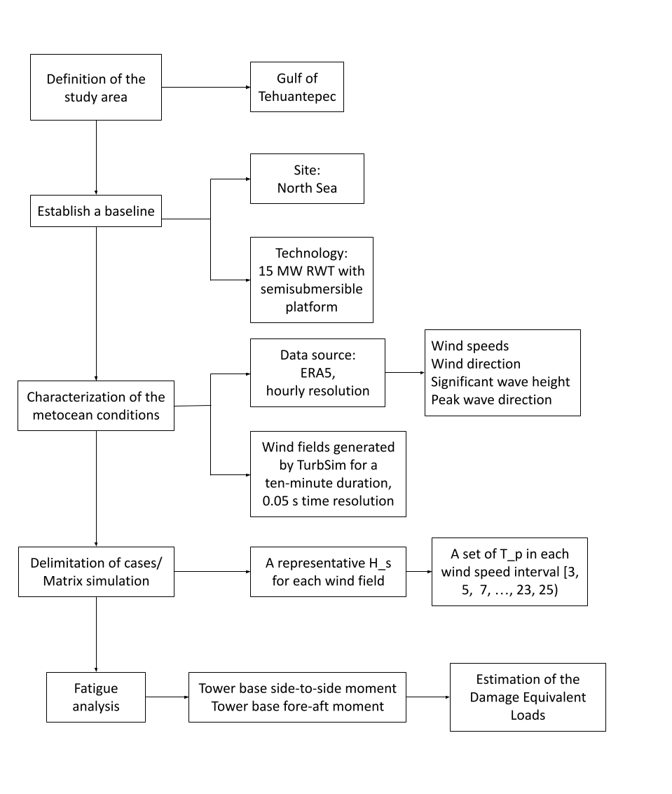
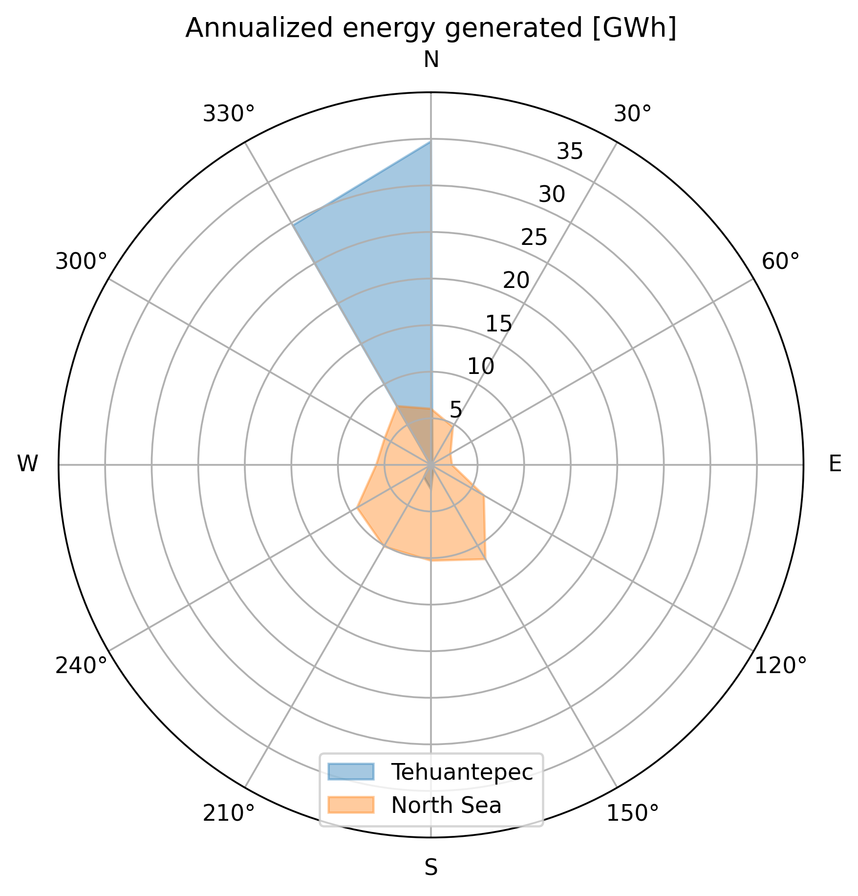

5 Performance of an offshore wind turbine in the Gulf of Tehuantepec
5.1 Introduction
Offshore wind energy is gaining increasing attention as a promising renewable energy source due to its significant advantages over traditional fossil fuels. Offshore wind turbines can take advantage of higher and more consistent wind speeds, resulting in higher energy output than their onshore counterparts. In recent years, there has been a growing trend toward installing new offshore wind facilities globally [1], with increasing investments and technological advancements in offshore wind energy.
In Mexico, some studies have been performed to assess the technical and economic feasibility of offshore wind in the Gulf of Mexico and the Pacific Ocean [2–4]. According to the World Bank Group [5], there are four zones suitable for floating offshore wind technology (FOWT) in the country: the Gulf of California, the eastern region of Tamaulipas, the northern region of the Yucatan Peninsula, and the southern region of Oaxaca at the Gulf of Tehuantepec being this last zone the area with the highest wind resources on the country.
The conditions in the Gulf of Tehuantepec include high wind speeds [6] and high water depth [7], which allows for exploring the technical feasibility of floating platforms. This work aims to analyze the performance of an offshore wind turbine and its platform in the Gulf of Tehuantepec by analyzing the energy produced and structural loads due to the wind and sea conditions. Next, a review of studies about dynamic analysis of offshore wind turbines is given and summarized in table 1.
Robertson and Jonkman [8] analyzed the dynamic response of six offshore platforms for a 5 MW wind turbine according to the IEC 61400-3 design standard located on the northern North Sea. These platforms are the MIT/NREL tension leg platform, OC3-Hywind spar, ITI energy barge, UMaine tension leg platform, UMaine-Hywind spar, and UMaine semi-submersible. For the different analyses on each platform, the specifications of the wind turbine and the metocean data were the same. Also, the properties of every structure and the mooring system designs were required to develop a fully dynamic model for each one. With this model, the loads analysis is performed to identify the ultimate loads and fatigue loads by simulating a set of load cases. With those results, the systems’ dynamic response is characterized and compared with a land-based system.
The load cases presented on [8] consider different scenarios, including power production under normal operation and with fault occurrences, parked with and without faults, using normal and extreme turbulence models, and wind conditions. The different combinations of the scenarios give a total of 2,190 simulations for each offshore platform model. Results were presented in terms of the ratio between the resulting loads from the floating systems by the corresponding values from the land-based analysis. For the ultimate loads, the transverse bending moments of the blade root, the low-speed shaft at the main bearing, the yaw bearing, and the tower base were analyzed. For fatigue loads, simulations were performed for the in-plane and out-of-plane blade root bending moments, the 0\(^{\circ}\) and 90\(^{\circ}\) low-speed-shaft bending moments at the main bearing, and the side-to-side and fore-aft bending moments in the yaw bearing and in the tower base.
Tran and Kim [9] conducted a CFD simulation of the OC4 DeepCwind semi-submersible platform for the NREL 5MW turbine with the objective of analyzing the influences between floating platform motions and wind turbine aerodynamic performance considering the influence of wind and waves. Results were compared with an OpenFAST simulation. They analyze the surge, heave, pitch, and mooring line tension response along the thrust and power coefficients under an operating condition. Also, aerodynamic loads at different positions of the tower were obtained. Their findings highlight the importance of accurately capturing unsteady aerodynamic and hydrodynamic interactions, as these significantly affect platform motion, aerodynamic loads, and mooring tension, with notable differences observed between CFD and FAST simulations under coupled wind-wave conditions.
Hashemi et al. [10] simulated the effects of wind and wave loads generated by the hurricanes Carol and 1938, with peak wind velocities of 49 and 45 m/s, respectively. They used a monopile offshore wind turbine located on the US East Coast to assess the sub-structural response to load variability. Using OpenFAST, they analyzed the total tower base moment at the monopile base and the displacement at the transition point of the tower and the monopile structure.
Zambrano et al. [11] analyzed the motion response of a floating structure designed to support three wind turbines. It was performed under different storm conditions of the sea states in the Gulf of Mexico. Analysis of the floating platform’s response amplitude operator was carried out for surge, heave, and pitch for those conditions and for two proposed turbines.
The feasibility of a floating offshore wind farm in United Arab Emirates was studied by Al Qubaisi et al. [12]. The criteria for the selection of the site include the water depth and wind speed; for the proposed location, the water depth is between 10 and 30 m, and the average wind speed above 5.4 m/s. Costs of the installation were estimated and compared with the Gemini offshore wind farm located in the Netherlands. The study does not analyze the performance of the proposed technology under the site conditions.
In the Tehuantepec Isthmus, Bernal Camacho et al. [13] estimated the wind potential of the 5 MW NREL wind turbine and analyzed the dynamic behavior of the semisubmersible OC4 DeepCwind platform through numerical analysis using ANSYS, under the following environmental scenarios: the highest probability of occurrence and the most extreme conditions (Hurricane Barbara, 2019). Results analyze the variations in the heave, pitch, and surge of the platform under those conditions in terms of the displacement of the center of gravity (CG) and the parameter \(d/a\) where \(a\) is the distance from the keel to the upper deck of the external floats, and \(d\) is the required draft. For extreme conditions, authors consider necessary the use of safety and stabilization methods.
::: {#tab: review} +:——+:————+:——+:——+:——+:————+ | Refe | Gap | Techn | Site | Bas | Comparison | | rence | | ology | condi | eline | criteria | | | | t | tions | | | | | | ested | | | | +——-+————-+——-+——-+——-+————-+ | * | Understand | NREL | North | NREL | Sea-to-land | | Robe | the | off | Sea | 5MW | ratio of | | rtson | fundamental | shore | | land | Blade-Root | | and | design | 5MW | | based | Bending | | Jon | trafe-off | with | | | Moment, | | kman, | between the | the | | | Low- | | 2011 | different | MIT | | | Speed-Shaft | | [| concepts | /NREL | | | Bending | | robe? | | TLP, | | | Moment, | | rtson | | U | | | Yaw-Bearing | | Loads | | Maine | | | Bending | | Analy | | TLP, | | | Moment, | | sisSe | | OC3 | | | Tower-Base | | veral | | H | | | Bending | | 2011] | | ywind | | | Moment, | | | | spar, | | | Blade-Root | | | | UMain | | | Bending | | | | spar, | | | Momente | | | | U | | | In-Plane, | | | | Maine | | | Blade-Root | | | | s | | | Bending | | | | emisu | | | Moment | | | | bmers | | | Ou | | | | ible, | | | t-of-Plane, | | | | ITI | | | Low- | | | | E | | | Speed-Shaft | | | | nergy | | | Bending | | | | barge | | | Moment 0°, | | | | | | | Low- | | | | | | | Speed-Shaft | | | | | | | Bending | | | | | | | Moment 90°, | | | | | | | Yaw-Bearing | | | | | | | Bending | | | | | | | Moment | | | | | | | Si | | | | | | | de-to-Side, | | | | | | | Yaw-Bearing | | | | | | | Bending | | | | | | | Moment | | | | | | | Fore-Aft, | | | | | | | Tower-Base | | | | | | | Bending | | | | | | | Moment | | | | | | | Si | | | | | | | de-to-Side, | | | | | | | Tower-Base | | | | | | | Bending | | | | | | | Moment | | | | | | | Fore-Afte | +——-+————-+——-+——-+——-+————-+ | * Ma | Dynamic | 5MW | Spe | | Loads on | | et | response of | tu | cific | | Tower base | | al, | a FOWT | rbine | condi | | of | | 2014 | under | with | tions | | Wind-wave, | | [| different | OC3-H | of | | wave-only. | | maWi? | en | ywind | waves | | Power | | ndwav | vironmental | spar | (T | | spectrum of | | eIndu | conditions | -type | =10s, | | platform | | cedDy | using a | stru | H=6m) | | heave, | | namic | numerical | cture | and | | surge and | | 2014] | simulation | | wind | | pitch | | | method | | vel | | motions by | | | | | ocity | | wind-wave | | | | | of | | and | | | | | 11.4 | | wave-only | | | | | m/s | | | +——-+————-+——-+——-+——-+————-+ | * | Identify | NREL | Ij | | Parameters | | M | the | 5MW | muden | | for the | | orató | potential | mon | sh | | design of | | et | relevant | opile | allow | | the | | al, | design load | from | water | | ro | | 2017 | cases from | the | site, | | tor/nacelle | | [mor? | the IEC for | OC3 | Dutch | | assembly | | atoUl | su | pr | North | | and the | | timat | b-structure | oject | Sea | | suport | | eLoad | design | | | | structure | | sResp | | | | | as flapwise | | onse2 | | | | | (out | | 017a] | | | | | -of-plane), | | | | | | | and | | | | | | | edgewise | | | | | | | (in-plane) | | | | | | | moment at | | | | | | | the root of | | | | | | | the blade, | | | | | | | the | | | | | | | overturning | | | | | | | moment at | | | | | | | the seabed | | | | | | | (mudline | | | | | | | moment), | | | | | | | pitch angle | | | | | | | and GenTq. | +——-+————-+——-+——-+——-+————-+ | * | Develop a | Deep | Spe | Re | Surge, | | Tran | hi | Cwind | cific | sults | heave and | | and | gh-fidelity | semis | condi | were | pitch | | Kim, | flui | ubmer | tions | com | motions, | | 2018 | d-structure | sible | of | pared | mooring | | [| simulation | flo | wind | with | cables | | tran? | that | ating | sp | a | tension, | | CFDSt | consider | pla | eeds, | FAST | thrust | | udyCo | the | tform | rot | simul | c | | upled | influence | with | ating | ation | oefficient, | | 2018] | of | the | speed | | power | | | aero-h | NREL | of | | c | | | ydrodinamic | 5MW | the | | oefficient, | | | coupling | tu | rotor | | platform | | | due to the | rbine | b | | surge | | | dynamic | | lade, | | respons, | | | motion of a | | H and | | blade root | | | FOWT | | T of | | force, | | | | | 11 | | blade root | | | | | m/s, | | moment. | | | | | 11.89 | | Tower based | | | | | rpm, | | force | | | | | 7.14 | | considering | | | | | m and | | Tower only | | | | | 14.3 | | and | | | | | s. | | Blades+To | | | | | | | wer+Nacelle | +——-+————-+——-+——-+——-+————-+ | * Xu | Develop a | NREL | Cape | | O | | et | the average | 5MW | Eliza | | ut-of-plane | | al., | conditional | wind | beth, | | bending | | 2020 | exceedance | tu | US | | moment, | | [xu? | rate method | rbine | coast | | tower-base | | Extre | for | p | | | s | | meLoa | estimating | laced | | | ide-to-side | | dsAna | extreme | on | | | bending | | lysis | loads on | the | | | moment, | | 2020] | FOWT | Deep | | | Tower-base | | | | Cwind | | | fore-aft | | | | s | | | bending | | | | emi-s | | | moment, | | | | ubmer | | | anchor | | | | sible | | | tension | | | | pla | | | | | | | tform | | | | +——-+————-+——-+——-+——-+————-+ | * | Ch | 5MW | US | Perce | Total tower | | Ha | arachterize | off | east | ntage | base moment | | shemi | the spatial | shore | coast | c | at the | | et | variability | mon | | hange | monopile | | al., | of extreme | opile | | of | base | | 2021 | wind and | | | the | (reactMYss) | | [@ | wave loads | | | diffe | and the | | hashe | under | | | rence | d | | miAss | extreme | | | to | isplacement | | essme | hurricane | | | the | (PtfmSurge) | | ntHur | conditions | | | mean | | | rican | | | | of | | | eGene | | | | the | | | rated | | | | five | | | 2021] | | | | p | | | | | | | oints | | | | | | | spat | | | | | | | ially | | | | | | | lo | | | | | | | cated | | +——-+————-+——-+——-+——-+————-+ | * | Analyze the | IEA | Av | Compa | RAOs of | | | technical | 15 MW | erage | rison | heave, | | Papi | i | and | met | be | pitch and | | and | mplications | NREL | ocean | tween | surge. | | Bac | of | 5 MW, | data | the | Ratio | | hini, | upscaling | both | from | p | offshore to | | 2022 | floating | over | the | erfor | onshore of | | [p? | wind | the | west | mance | GenPwr, | | apiTe | turbines to | Deep | coast | of | GenTq, | | chnic | understand | CWind | of | the | RotSpeed, | | alCha | how the | s | the | two | RotThrust, | | lleng | benefits of | emi-s | US | turb | RtAeroFxh, | | esFlo | upscaling | ubmer | | ines. | TwrBsMyt, | | ating | can impact | sible | | Ratio | TwrBsMxt, | | 2022] | not only | pla | | off | TwrBsFxt, | | | turbine | tform | | shore | YawBrFxp, | | | cost per | | | to | YawBrMyp, | | | installed | | | on | YawBrMxp, | | | kW but also | | | shore | TipDxc1, | | | the cost of | | | | TipDxc2, | | | the | | | | TipDxc3, | | | floater, | | | | TTDspFA, | | | mooring | | | | TipDyc1, | | | lines, and | | | | TipDyc2, | | | a | | | | TipDyc3, | | | ncillaries. | | | | TTDspSS, | | | | | | | RootMxb1, | | | | | | | RootMxb2, , | | | | | | | RootMxb3, , | | | | | | | RootMyb1, | | | | | | | RootMyb2, | | | | | | | RootMyb3 | +——-+————-+——-+——-+——-+————-+ | * | The | OC4 | Most | | Response | | | feasibility | Deep | pro | | Amplitude | | Bern | of a | Cwind | bable | | Operators | | al-Ca | floating | semis | and | | (RAOs) of | | macho | platform | ubmer | most | | Surge, | | et | under the | sible | ex | | Heave and | | al., | wave and | pla | treme | | Pitch of | | 2022 | wind | tform | condi | | the | | [b? | conditions | | tions | | platform | | ernal | of the Gulf | | at | | for | | -cama | of | | the | | different | | choTe | Tehuantepec | | Gulf | | c | | chnic | | | of | | ombinations | | alAss | | | T | | of the d/a | | essme | | | ehuan | | parameter | | ntOff | | | tepec | | and, | | shore | | | | | d | | 2022] | | | | | isplacement | | | | | | | of the | | | | | | | platform | +——-+————-+——-+——-+——-+————-+ | * | | | | | | +——-+————-+——-+——-+——-+————-+
: Literature review on dynamical analysis of offshore wind turbines. :::
Previous studies give an overview of relevant parameters to be analyzed on wind turbine performance. This study presents a performance analysis of a floating offshore wind turbine under the specific metocean conditions of the Tehuantepec Isthmus, using the OpenFAST software. Those relevant conditions, characterized by wind speeds, peak (or mean) wave period, significant wave height, and wind and wave directions, are obtained from the ERA5 reanalysis dataset. Due to the lack of studies on offshore wind turbine performance in Mexico, particularly on floating technology, the results are compared with the same technology in metocean conditions in the North Sea. The assessment presented in this research will facilitate direct comparisons with established offshore wind installations at other locations, providing decision-makers with valuable insights into the prospective future of wind energy in the region.
The chapter is structured as follows. Section 2 describes the location and characteristics of the sites, technology and data, also, the methodology to delimit the cases is given. The analysis and comparison of the results are presented in section 3, and finally, section 4 presents the conclusions.
5.2 Data and methodology {#sec: data_meth}
5.2.1 Study area and baseline
The study area for this research is delimited to the Gulf of Tehuantepec, located on the southeast side of Mexico on the Pacific Ocean, as shown in Figure 1. The interest in this site, as previously described, is due to the high wind velocities present throughout the year. Figure 2 shows the delimitation of potential areas using the same methodology as in [2]; however, the bathymetry until 50 m, indicated by a red line is very near the coast, and higher velocities are away the coast, with a higher depth, therefore, in this study, the performance of a FOWT technology is evaluated.
The turbine’s performance at the proposed site will be compared with the same technology but in a different place; since there are no other offshore facilities in Mexico, a baseline site in the North Sea is proposed. The study zone and the baseline site are shown in Figure 3. Both sites present ocean depth conditions for FOWT, usually above 50 m. For the selected locations, the water depth at the Gulf of Tehuantepec and the North Sea is 83 m and 168 m, respectively [7].
5.2.2 Data
To analyze the effects of fatigue on the device during a typical turbine’s lifetime, data from 25 years was used. The metocean data was obtained from the ERA5 reanalysis dataset from 1996 to 2020 with an hourly resolution, using a bi-linear interpolation at the points indicated in Figure 3. The next variables were extracted:
Significant wave height [m]
Peak wave period [s]
Wave direction [°]
Wind direction [°]
Wind speed [m/s]
The technology selected to evaluate its performance was the 15-MW offshore reference wind turbine developed by NREL [14] with the UMaine semisubmersible platform [15]. The main parameters of the turbine and the platform are shown in Table 2, and a schematic diagram is shown in Figure 5.
::: {#tab: turbine_par} Parameter Value ——————————– ————————— Turbine rating [MW] 15 Turbine class [-] IEC Class 1B Hub height [m] 150 Rotor diameter [m] 240 Cut-in wind speed [m/s] 3 Rated wind speed [m/s] 10.59 Cut-out wind speed [m/s] 25 Platform type Semisubmersible Mooring system Three-line chain catenary
: Parameters of the 15 MW offshore reference wind turbine with a semisubmersible platform, developed by NREL [14] and UMaine [15]. :::


5.2.3 Methodology
In the first stage, the wind speeds for both sites were analyzed. Then, energy production was estimated by evaluating the wind speed time series in a fitted function for the wind turbine power curve.
To compare the FOWT’s performance under the metocean conditions on the Gulf of Tehuantepec against the conditions on the North Sea, fatigue loads are proposed as the performance indicator, particularly the Tower base side-to-side moment (TwrBsMxt) and the Tower base fore-aft moment (TwrBsMyt). These time series are outputs of the OpenFAST software. The selection of these two load components is justified by their direct relevance to structural fatigue at the tower base, which is a critical point for the integrity and lifetime of the wind turbine. TwrBsMyt captures the influence of wind thrust and wave-induced pitch motions, typically dominant in aligned environmental conditions, while TwrBsMxt reflects the effects of yaw misalignment, directional wave loading, and lateral turbulence.
In the next step, the structure of the IEC 61400-3-2 standard for the design of floating offshore wind turbines [16] is followed to define the cases to be performed for the wind turbine, in particular the Design Load Case (DLC) 1.2 for fatigue analysis. Since the DLCs are standards for design and require testing of all possible scenarios, they are used as guidelines for the simulation inputs in this research since the actual metocean conditions of the sites are available. DLC 1.2 suggests a normal turbulence model for the wind condition to be generated in bin intervals of at least 2 m/s between the wind turbine cut-in and cut-out speeds. This is to generate a wind field from 3 m/s to 25 m/s. To generate these wind fields, the Turbsim software, a stochastic full-field turbulent wind simulator, is used [17].
The wind field outputs from TurbSim are time series of three-dimensional wind velocity components, defined on a specified grid over a vertical plane perpendicular to the mean wind direction. These wind fields vary in time and space, capturing turbulent fluctuations across the rotor-swept area. In this research, the generated wind fields have a ten-minute duration with a time resolution of 0.05 seconds.
To delimit the cases for analysis and set up the matrix simulation for OpenFAST, DLC 1.2 suggests simulating for each joint probability of sea states at each 2 m/s wind bin interval, considering the misalignment and multidirectional between wind and waves. Since the actual conditions of the sites are being used and a design process is not being performed, the process for constraining the input data is as follows:
The complete data set is segmented into bins for each 30° for the wind directions (0°-30°, 30°-60°, ..., 330°-360°).
For the constrained data in each wind bin direction, a 2nd-grade polynomial is fitted between the wind speeds in the interval \(v_{cut-in}\) to \(v_{cut-out}\) and the significant wave heights. This equation provides a “representative height" corresponding to each wind speed. An example of the interpolation is shown in Figure 6.
Finally, the frequencies of each wave period and direction that occur into the wind speed interval (3-5 m/s, 5-7 m/s, ..., 23-25 m/s) are obtained.
Each input for a simulation would be defined as a wave period with a representative height and direction for each wind speed interval for each wind direction interval.
The simulations were conducted using data from previous classifications of cases. Each simulation is identified by a unique combination of wind speed magnitude and direction, wave period, significant wave height, and wave directions. Each event may occur multiple times, and its frequency has been quantified.
Simulations were performed with a duration of ten minutes under operational conditions; therefore, events such as start-up or shutdown sequences were not considered. Subsequently, the TwrBsMxt and TwrBsMyt time series obtained from OpenFAST were analyzed. These variables represent the moments at the base of the tower. To enable comparison between both sites, a rainflow counting algorithm was applied, a method commonly used to identify and count stress cycles in time series data for fatigue analysis. Using this approach, the Damage Equivalent Load (DEL) was calculated for each directional bin. The calculation of the DEL is described in Section [sub: del].
In summary, this study’s methodology first analyzed wind resources at the two sites and then estimated energy production under specific metocean conditions. Following IEC standards for floating offshore wind turbine design, Turbsim is used to generate wind fields, and OpenFAST for fatigue load simulations. The input data was constrained based on actual site conditions, and the joint probability of sea states and wind directions was taken into account to construct a detailed simulation matrix for calculating the Damage Equivalent Load (DEL). This approach provided an understanding of the environmental conditions in the Gulf of Tehuantepec and the North Sea, allowing for robust performance analysis of the wind turbine. A diagram summarizing the methodology is shown in Figure 7.
{#fig: meth width=“70%”}
6 Results and discussion {#sec: results}
6.1 Wind resources and energy production
The wind resources were analyzed to estimate the energy production of an IEA 15 MW offshore wind turbine at the Gulf of Tehuantepec and a baseline site in the North Sea. Figure 8 shows the monthly distribution of wind speeds over 25 years (1996-2020). Dashed lines indicate the turbine’s cut-in and cut-out speeds at 3 and 25 m/s, respectively. Both locations exhibit similar seasonal trends, with lower wind speeds during summer, May to July, and higher speeds in winter, December to February. However, the North Sea generally shows higher average speeds and more pronounced extreme events.
In terms of Capacity Factor, the monthly distribution of the energy produced is shown in Figure 9. Due to the distribution of wind speeds in Tehuantepec, the energy produced has a wider range compared to the North Sea, which has smaller intervals of energy values. In the previously identified season of lower wind speeds, there is also a low season of energy production, in May and June, only for Tehuantepec. The annualized values of the Capacity Factors are 0.54 and 0.63 for Tehuantepec and the North Sea, respectively.
Figure 10 presents the annualized energy distribution across wind direction bins. The plot shows that the north-northeast direction dominates Tehuantepec’s wind resource, whereas the North Sea exhibits a broader, more uniform distribution. The annualized energy values are 70,134.79 MWh and 82,130.85 MWh for Tehuantepec and the North Sea, respectively, with the latter site producing approximately 17% more energy than the former.
{#fig: energy_rose width=“50%”}
6.1.1 Damage Equivalent Load analysis
The fatigue performance of the FOWT was evaluated through OpenFAST simulations. Here, an event is defined as a combination of wind speed, significant wave height, wave direction, and peak wave period. Over the 25-year period, 186360 events were identified at Tehuantepec and 204,102 at the North Sea. These events are grouped into 1,772 unique simulation cases for Tehuantepec and 5,321 for the North Sea.
In the first stage, the wind and wave directions are analyzed to understand the metocean conditions at each site. This information is directly obtained from ERA5. Figure 11 shows the distribution of wind speeds and wave conditions at both sites. At Tehuantepec, the wind predominantly comes from the north-northeast, and the wave conditions display two prominent directional peaks: one from the northeast and another from the south. Due to the wind distribution, waves incoming from the north are likely wind-induced. In contrast, the North Sea exhibits a more consistent wind and wave regime, which could lead to more uniform and predictable loading patterns on the turbine structure.
To assess fatigue damage, a rainflow counting algorithm was applied to the tower base moments, side-to-side (TwrBsMxt) and fore-to-aft (TwrBsMyt), to compute the Damage Equivalent Load (DEL) for each set of simulations. Figure 12 compares the DEL values at both sites. At Tehuantepec, the DEL values for both side-to-side and fore-aft moments are strongly influenced by the predominant wind direction, indicating that fatigue damage is primarily wind-driven. In contrast, at the North Sea, the DEL values exhibit a more uniform distribution, reflecting the combined influence of wind and wave loading.
To assess the impact of fatigue loads per unit of energy generated, the indicator \(\text{DEL}/\text{Energy}\) is calculated for each directional bin. This metric represents the structural fatigue effects relative to energy production. In the case of Tehuantepec, the directional bins with low values of the indicator can be identified, indicating smaller fatigue effects due to high energy generation in those directions. Peaks in the indicator for eastern and western directions are due to the lack of energy generation, as previously mentioned. In the North Sea case, the indicator remains homogeneously distributed, except for a peak in the east for the TwrBsMyt, which is caused by the absence of energy generation in that direction, as shown in Figure 12.


The proposed indicator helps identify the optimal wind directions for turbine orientation, maximizing energy capture while minimizing exposure to fatigue loads in low-energy directions. Figure 14 presents the normalized DEL and the proposed indicator, illustrating the relationship between fatigue loads and energy generation. In directions where damage is high, production is also significant, leading to lower indicator values. For Tehuantepec, it is recommended to position turbines primarily in the dominant north and northeast directions, as other directions contribute minimally to energy generation while inducing fatigue loads. In contrast, the North Sea shows a more uniform distribution of both damage and energy production, allowing for a wider control position. The indicator remains consistent, except in the east direction, where the lack of energy results in a higher indicator value.


6.2 Key insights {#sec: conc}
This study analyzed the performance of a 15 MW floating offshore wind turbine in the Gulf of Tehuantepec and compared it with a baseline site in the North Sea, focusing on wind resources, energy production, and fatigue loads. Meteorological and oceanic conditions were characterized using reanalysis datasets, and high-resolution simulations were performed using OpenFAST to capture turbulence variability.
The Gulf of Tehuantepec exhibits strong wind resources, particularly from the north-northeast direction, while the North Sea shows homogeneous wind incoming directions. Fatigue loads, measured through the Damage Equivalent Load (DEL), were higher in Tehuantepec, especially in dominant wind directions, indicating significant fatigue damage due to strong wind-driven loads. In contrast, the North Sea exhibited a more uniform distribution of fatigue loads, reflecting the combined influence of wind and wave conditions.
The proposed DEL/Energy indicator revealed that in Tehuantepec, the north and northeast directions are optimal for turbine orientation, offering high energy production with lower fatigue damage per unit of energy. In the North Sea, the indicator showed a more uniform distribution, allowing greater flexibility in turbine positioning, though the east direction should be avoided due to higher fatigue damage relative to energy production.
The Gulf of Tehuantepec offers significant potential for offshore wind energy, its higher fatigue loads and seasonal variability require careful turbine design, placement, and maintenance strategies. These insights can guide future offshore wind projects in Mexico and similar regions.